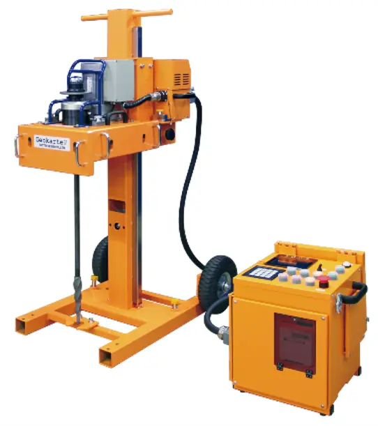
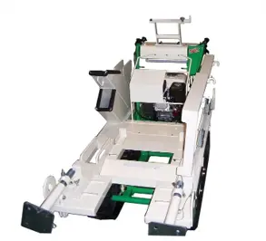

販売・買取（新台中古）
ジオカルテ販売当社ではジオカルテ新台のお取り扱いをしております。新台のお求めはリースもしくは割賦販売にて承っております。各金額は下の表をご確認ください。
ジオカルテⅣ（日東精工製）

リース料金
| 3年 | 133,900 円/月（再リース料：267,800円/年） |
|---|---|
| 4年 | 103,200 円/月（再リース料：206,400円/年） |
| 5年 | 84,600 円/月（再リース料：169,200円/年） |
※消費税別の金額となります。
※オリコビジネスリースとなります。
※満期後年単位での再リースとなります。
仕様
| 型式 | SS401型 |
|---|---|
| 試験荷重の変更 | 自沈状態を自動検出し、6段階（0.05、0.15、0.25、0.50、0.75、1.0kN）又は4段階（0.25、0.50、0.75、1.0kN）で自動切り替え |
| 荷重センサ | 歪みゲージ式荷重検出器 |
| 荷重制御 | 荷重センサによる荷重フィードバック制御 |
| 試験データ出力内容 |
試験情報（試験年月日、時間、試験番号） 試験データ（貫入量、荷重、半回転数、観察記録、ロッド回転トルク等） |
| データ記憶容量 | 回転貫入のみの場合で、50ポイント、合計5,000ｍ分 |
| 試験機構造 | ビルドブロック方式（5つのユニットに分割、各ユニット重量25kg以下） |
| 試験機寸法 | W630×D830（D1030）×H1300（）内は車輪引き出し時。（試験時） |
| 試験機質量 | 151kg（おもり有り） |
| 制御装置寸法 | W448xD349.5xH459 |
| 制御装置質量 | 23.5kg |
ジオカルテⅣ/SDS（日東精工製）
リース料金
| 3年 | 182,800 円/月（再リース料：365,600円/年） |
|---|---|
| 4年 | 140,900 円/月（再リース料：281,800円/年） |
| 5年 | 115,400 円/月（再リース料：230,800円/年） |
※消費税別の金額となります。
※オリコビジネスリースとなります。
※満期後年単位での再リースとなります。
仕様
| 型式 | SS401型 |
|---|---|
| 試験荷重の変更 | 11段階（0.05、0.10、0.15、0.20、0.25、0.38、0.50、0.75、0.88、1.0kN）又は7段階（0.25、0.38、0.50、0.63、0.75、0.88、1.0kN）で自動切り替え |
| 試験データ出力内容 |
試験情報（試験年月日、時間、試験番号） 試験データ（貫入量、荷重、回転トルク、沈下速度等） |
| データ記憶容量 | 10ポイント、合計50ｍ分 |
| 試験機構造 | ビルドブロック方式、5つのユニットに分割、各ユニット重量25kg以下。（チャックユニット除く） |
| 試験機寸法 | W630×D830（D1030）×H1300（）内は車輪引き出し時。（試験時） |
| 試験機質量 | 151kg（おもり有り） |
| 制御装置寸法 | W448xD349.5xH459 |
| 制御装置質量 | 23.5kg |
Gクローラー（日東精工）

リース料金
※ジオカルテのタイプは問わず同一価格です。
| 3年 | 27,100 円/月（再リース料：54,200円/年） |
|---|---|
| 4年 | 20,900 円/月（再リース料：41,800円/年） |
| 5年 | 17,100 円/月（再リース料：34,200円/年） |
※消費税別の金額となります。
※オリコビジネスリースとなります。
※満期後年単位での再リースとなります。
仕様
| 寸法 | 幅690×奥行1850×高さ1100mm（ジオカルテ搭載時） |
|---|---|
| 概算重量 | 約200kg（試験機材含まず） |
| 駆動方式 | ガソリンエンジン |
ジオカルテ中古販売/買取
当社ではジオカルテの中古販売も行っております。販売の際はメーカーで校正・修理を行い、動作が保証できる状態で出荷いたします。金額は個体により変動いたしますので、お問い合せをいただいてからのご提示になります。
また買取については弊社から新台を購入いただく場合、既にお持ちの中古機を通常よりも高値で買取します。買取だけも承っているので、お気軽に査定依頼をお申込みください。
※状態、シリアルNoによって買取金額は変動します